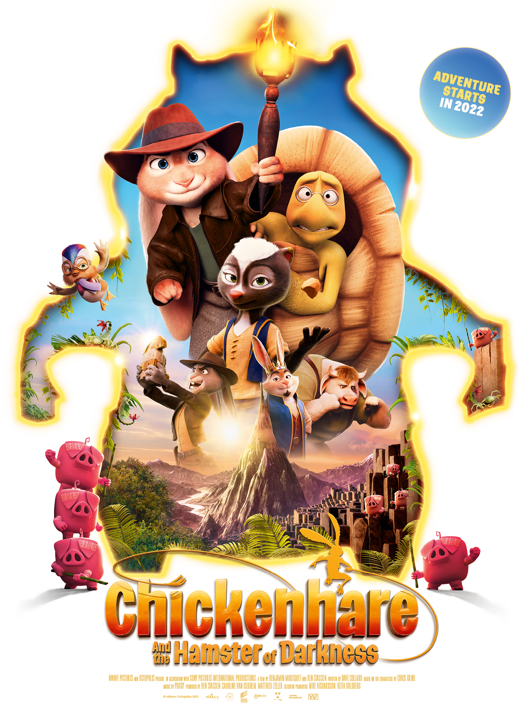

Chickenhare and the Hamster of DarknessYoung Chickenhare is the adopted son of King Peter, a famous adventurer. Part chicken, part hare, he has a really tough time growing up and disguises himself as a hare to avoid the mockery of his peers. When the day of the Royal Adventurer Society trials comes, Chickenhare, hampered by his disguise, fails miserably. But, he is determined to grab a second chance and find the Sceptre of the Hamster of Darkness, before his evil uncle, Lapin does. |
Show Times12:45 | 17:15 | 20:00 | 22:30 |Adventure, Animated, Comedy 91 min | PG V CastJDanny Fehsenfeld, Joe Ochman, Mark IronsDirected byBen Stassen, Benjamin MousquetMusicPuggy |